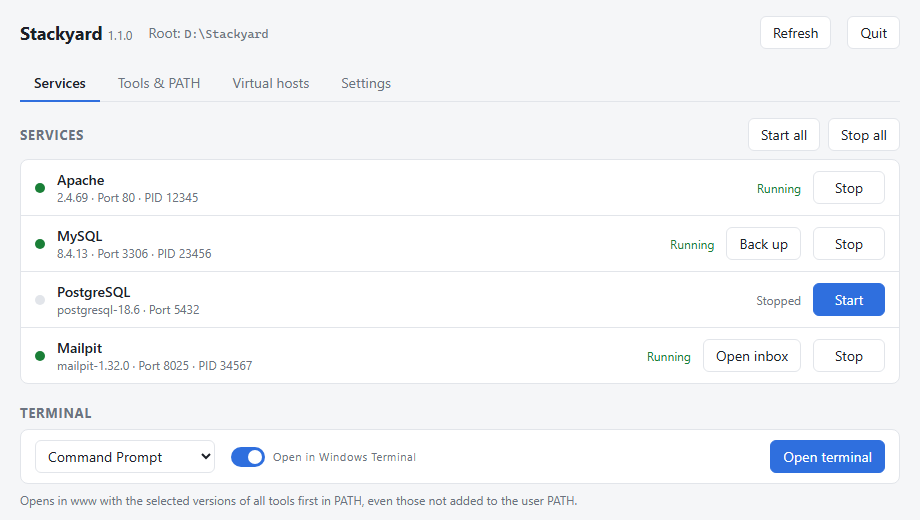
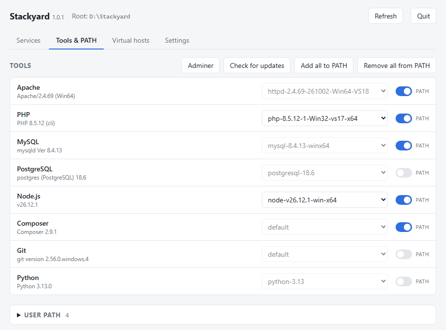
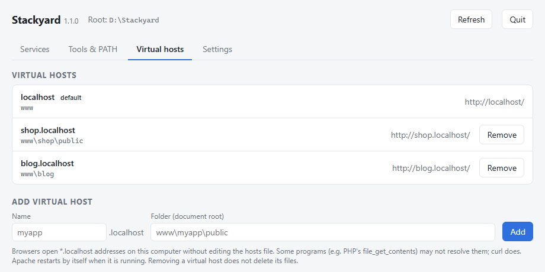

Your local web stack,
in one portable folder
Apache, PHP, MySQL, PostgreSQL, Node.js, Composer, Git and Python for Windows, with a small app to run them. Unzip, run, Start all. Free and open source.

Everything a PHP project needs, nothing it doesn't
A light alternative to Laragon, XAMPP or WAMP. No Windows services, no admin rights, no installer: everything, settings and databases included, stays in the folder you unzipped.
Start and stop with one click
Apache, MySQL and PostgreSQL, one by one or all at once. Port conflicts are named, crashes are noticed and the log is shown.
Versions side by side
Keep PHP 8.3 and 8.5, or two Node.js versions, and switch from a list. Running services restart by themselves.
Updates built in
Check for and download new PHP, Node.js and Composer releases, verified with SHA-256.
PATH without the pain
Put the selected tools on your user PATH with a switch (with backups), or open a terminal that already has them.
Virtual hosts in two clicks
shop.localhost → www\shop\public. No hosts file edits, no administrator prompt.
Adminer included
Browse MySQL and PostgreSQL in the browser, already logged in to your local servers.
Lives in the tray
Close the window and the services keep running. Optionally start with Windows and bring back what was running.
Portable for real
Move the folder to another drive or a USB stick: configs are regenerated and your PATH entries follow.
Small and native
A ~5 MB app written in Rust. Light and dark theme, seven languages.




What's in the download
The Visual C++ runtime the servers need is included too, so there is nothing else to install. Don't need the databases? The lite zip is the same without MySQL and PostgreSQL, about half the size.
| Apache (Apache Lounge) | 2.4.69 |
| PHP, Thread Safe x64 | 8.3 |
| MySQL Community Server | 8.4 LTS |
| PostgreSQL | 18 |
| Node.js | 26 |
| Composer | 2 |
| Git for Windows, portable | 2.56 |
| Python | 3.13 |
| Adminer | 6.2 |
Quick start
About two minutes from download to http://localhost/.
- Download the zip from the releases page. Before unzipping: right-click › Properties › Unblock.
- Unzip to a folder with only English letters in its path, for example
D:\Stackyard. - Run
Stackyard.exe. If SmartScreen warns you: More info › Run anyway. - Start all and open
http://localhost/. Your projects go inwww\.
MySQL: user root, no password, port 3306. PostgreSQL: user postgres,
no password, port 5432.
FAQ
Is it really free?
Yes. Stackyard is open source under the MIT License, with no paid tier and no nagging. If it saves you time, you can buy me a coffee.
I'm coming from Laragon. How do I move?
Quit Laragon (or change Stackyard's ports in Settings), copy your projects into www\
or add virtual hosts pointing at their current folders. project.test becomes
project.localhost. A MySQL 8.4 data folder can be copied over as is; the README in the
zip has the steps.
Why does Windows warn me when I start it?
The exe is not code-signed yet, so SmartScreen does not know it. Click More info › Run anyway. The source code is on GitHub and every release has a SHA-256 checksum.
Why .localhost and not .test?
Browsers resolve *.localhost to your own computer on their own, so Stackyard never has
to edit the hosts file or ask for administrator rights.
Can I use other versions of PHP, MySQL or Node.js?
Yes. Unzip any official build into bin\<tool>\<version>\ and press
Refresh. PHP, Node.js and Composer can also be downloaded from the app.
Does it change anything outside its folder?
Only what you switch on: entries in your user PATH (a backup is kept before every change) and the "start with Windows" entry. To uninstall, switch those off and delete the folder.